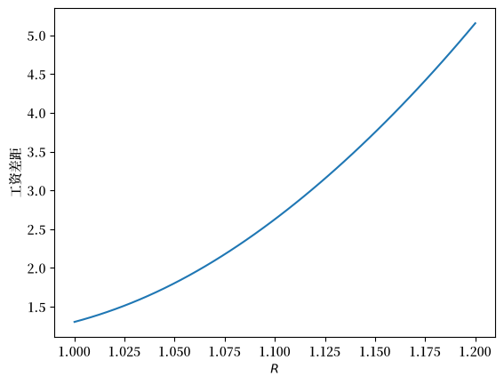
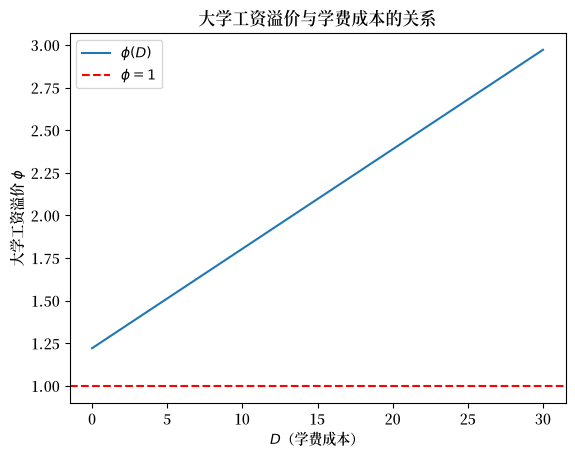
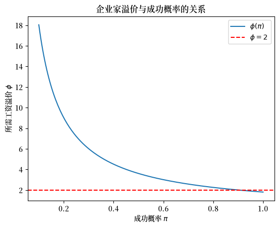

13. 均衡差异模型#
13.1. 概述#
本讲座介绍了一个研究大学与高中毕业生工资差距的模型，其中获得大学学历所需的时间是关键因素。
这个模型最初由米尔顿·弗里德曼创建，用于研究美国牙医和医生的收入差异——他想弄清这种差异是竞争性劳动力市场的自然结果，还是源于政府与医疗专业组织设置的准入门槛。
詹妮弗·伯恩斯在其著作[Burns, 2023]第4章中，详细描述了米尔顿·弗里德曼与西蒙·库兹涅茨的合作研究，这项研究最终促成了[Kuznets and Friedman, 1939]和[Friedman and Kuznets, 1945]的发表。
我们可以将弗里德曼的模型对应到我们的研究中：把高中毕业生对应于牙医，把大学毕业生对应于医生。
我们提供的是一个”不完整”的模型，因为它只包含一个方程，而这个方程只是一个更完整模型的均衡条件集合中的一部分。
这个”均衡差异”方程确定了使高中和大学毕业生终身收入现值相等的工资比率。
其基本思想是：终身收入水平会以某种方式自动调整，直到高中应届毕业生在”直接工作”和”继续上大学”这两个选择之间无差别。
（在更完整的模型中，其他方程的作用就是解释是什么因素推动了这种调整。）
我们的模型只是相对工资”均衡差异”理论的一个例子，这类理论至少可以追溯到亚当·斯密的《国富论》[Smith, 2010]。
本讲座大部分内容只使用线性代数工具，特别是矩阵乘法和矩阵求逆。
不过，在讲座末尾，我们会用到一些微积分知识，以防读者想了解如何通过计算偏导数来更简洁地呈现某些结论。
这样做也能让我们展示Python在处理微积分计算方面的强大功能！
不过即使不懂微积分，我们所用的线性代数工具也完全足够理解本讲座内容。
和往常一样，我们先导入一些Python模块。
import numpy as np
import matplotlib.pyplot as plt
from collections import namedtuple
from sympy import Symbol, Lambda, symbols
import matplotlib as mpl
FONTPATH = "fonts/SourceHanSerifSC-SemiBold.otf"
mpl.font_manager.fontManager.addfont(FONTPATH)
plt.rcParams['font.family'] = ['Source Han Serif SC', 'DejaVu Sans']
13.2. 无差异条件#
这个模型的关键思想是：大学入门级工资溢价必须调整，直到具有代表性的工人在上大学和不上大学之间感到无差异。
设：
\(R > 1\) 为一期债券的总回报率
\(t = 0, 1, 2, \ldots T\) 表示一个人工作或上大学的年数
\(0\) 表示一个人如果不上大学高中毕业后可以工作的第一个时期
\(T\) 表示一个人工作的最后一个时期
\(w_t^h\) 为高中毕业生在 \(t\) 时的工资
\(w_t^c\) 为大学毕业生在 \(t\) 时的工资
\(\gamma_h > 1\) 为高中毕业生工资的（总）增长率，使得 \( w_t^h = w_0^h \gamma_h^t\)
\(\gamma_c > 1\) 为大学毕业生工资的（总）增长率，使得 \( w_t^c = w_0^c \gamma_c^t\)
\(D\) 为上大学所需的前期货币成本
现在我们计算一个新的高中毕业生所能获得的现值，如果：
她立即工作并赚取没有大学学历者所领取的工资
她上大学四年，毕业后赚取大学毕业生的工资
13.2.1. 不上大学直接工作的现值#
如果某人高中毕业后立即工作，并在 \(t=0, 1, 2, \ldots, T\) 的 \(T+1\) 年内工作，她赚取的现值为：
其中
现值 \(h_0\) 是选择不上大学而是立即以高中毕业生的工资开始工作的人在时间 \(0\) 开始时的”人力财富”。
13.2.2. 上大学后工作的高中毕业生的现值#
如果某人在 \(t=0, 1, 2, 3\) 的四年内上大学，期间收入为 \(0\)，但在大学毕业后立即工作，并在 \(t=4, 5, \ldots ,T\) 的 \(T-3\) 年内工作，她赚取的现值为：
其中
现值 \(c_0\) 是选择上大学四年然后在 \(t=4\) 时以大学毕业生的工资开始工作的人在时间 \(0\) 开始时的”人力财富”。
假设大学学费加上四年的食宿费用总计为 \(D\)，必须在时间 \(0\) 付清。
因此，扣除上大学的货币成本后，高中毕业后第一个时期上大学的现值为：
现在我们制定一个纯均衡差异模型，用于验证大学-高中工资的初始差距 \(\phi\)，其中：
我们假设 \(R, \gamma_h, \gamma_c, T\) 以及 \(w_0^h\) 是固定参数。
首先，我们注意到，这个纯均衡差异模型认为，大学-高中工资差距 \(\phi\) 由一个”均衡”方程决定，该方程使不上大学的现值等于上大学的现值：
或
这个”无差异条件”是模型的核心。
求解方程 (13.1) 得到大学工资溢价 \(\phi\)：
在免费大学的特殊情况下，\(D =0\)。
在这种情况下，上大学的唯一成本是放弃作为高中学历工人的收入。
因此，
在下一节中，我们将编写 Python 代码来计算 \(\phi\) 并绘制它随决定因素变化的函数图。
13.3. 计算#
我们可以尝试改变各种参数，特别是 \(\gamma_h, \gamma_c, R\)，来构造一些有趣的例子。
现在让我们编写一些 Python 代码来计算 \(\phi\) 并绘制其与某些决定因素的关系。
# 为均衡差异模型定义 namedtuple
EqDiffModel = namedtuple('EqDiffModel', 'R T γ_h γ_c w_h0 D')
def create_edm(R=1.05, # 总回报率
T=40, # 时间跨度
γ_h=1.01, # 高中工资增长率
γ_c=1.01, # 大学工资增长率
w_h0=1, # 初始工资（高中）
D=10, # 上大学的成本
):
return EqDiffModel(R, T, γ_h, γ_c, w_h0, D)
def compute_gap(model):
R, T, γ_h, γ_c, w_h0, D = model
A_h = (1 - (γ_h/R)**(T+1)) / (1 - γ_h/R)
A_c = (1 - (γ_c/R)**(T-3)) / (1 - γ_c/R) * (γ_c/R)**4
ϕ = A_h / A_c + D / (w_h0 * A_c)
return ϕ
我们使用向量化而非循环，构建一些函数来帮助我们进行比较静态分析。
对于给定的一个实例，我们想在一个参数变化而其他参数保持固定时重新计算 \(\phi\)。
举个例子：
ex1 = create_edm()
gap1 = compute_gap(ex1)
gap1
1.8041412724969135
假设大学不收费，然后重新计算 \(\phi\)。
初始的大学工资溢价应该会降低。
# 免费大学
ex2 = create_edm(D=0)
gap2 = compute_gap(ex2)
gap2
1.2204649517903732
让我们构建一些图表，展示如果初始大学-高中工资比率 \(\phi\) 的某个决定因素发生变化，\(\phi\) 将如何改变。
我们先从总利率 \(R\) 开始。
R_arr = np.linspace(1, 1.2, 50)
models = [create_edm(R=r) for r in R_arr]
gaps = [compute_gap(model) for model in models]
plt.plot(R_arr, gaps)
plt.xlabel(r'$R$')
plt.ylabel(r'工资差距')
plt.show()
findfont: Failed to find font weight normal, now using 600.
findfont: Failed to find font weight normal, now using 600.
findfont: Failed to find font weight normal, now using 600.
{kind=link}

显然，初始工资比率 \(\phi\) 必须上升，以补偿一位未来的高中毕业生因等待开始获得收入而遭受的损失——记住，在 \(t=0, 1, 2, 3\) 这几年里，她什么都赚不到，而这段时间高中毕业的工人却在领取工资。
现在让我们研究，在其他决定 \(\phi\) 的因素保持不变的情况下，大学工资的增长率上升时，初始工资比率 \(\phi\) 会发生什么变化。
γc_arr = np.linspace(1, 1.2, 50)
models = [create_edm(γ_c=γ_c) for γ_c in γc_arr]
gaps = [compute_gap(model) for model in models]
plt.plot(γc_arr, gaps)
plt.xlabel(r'$\gamma_c$')
plt.ylabel(r'工资差距')
plt.show()
{kind=link}
注意当大学工资增长率 \(\gamma_c\) 上升时，初始工资差距是如何下降的。
工资差距下降是为了”平衡”两种职业类型的现值，一种是高中工人，另一种是大学工人。
给定其它参数不变，你能猜到我们改变高中学历工人的工资的增长率时，初始工资比率 \(\phi\) 会发生什么变化吗？
下图显示了会发生什么。
γh_arr = np.linspace(1, 1.1, 50)
models = [create_edm(γ_h=γ_h) for γ_h in γh_arr]
gaps = [compute_gap(model) for model in models]
plt.plot(γh_arr, gaps)
plt.xlabel(r'$\gamma_h$')
plt.ylabel(r'工资差距')
plt.show()
{kind=link}
13.4. 企业家与打工人的解读#
我们可以通过添加一个参数并重新解读变量来获得一个有关企业家和打工人的模型。
现在让 \(h\) 表示”打工人”的现值。
我们将企业家的现值定义为：
其中 \(\pi \in (0,1)\) 是企业家的”项目”成功的概率。
对于我们的打工人和企业家模型，我们将把 \(D\) 解释为成为企业家的成本。
这个成本可能包括雇佣工人、办公空间和律师的费用。
我们过去称之为大学、高中工资差距的 \(\phi\) 现在变成了 成功企业家收入与打工人收入的比率。
我们会发现，随着 \(\pi\) 的减少，\(\phi\) 会增加，这表明 成为企业家的风险越大，成功项目的回报就必须越高。
现在让我们用企业家-打工人的视角来解读这个模型
# 定义企业家-打工人解读下的模型
EqDiffModel = namedtuple('EqDiffModel', 'R T γ_h γ_c w_h0 D π')
def create_edm_π(R=1.05, # 总回报率
T=40, # 时间跨度
γ_h=1.01, # 高中工资增长率
γ_c=1.01, # 大学工资增长率
w_h0=1, # 初始工资（高中）
D=10, # 上大学的成本
π=0 # 创业成功的概率
):
return EqDiffModel(R, T, γ_h, γ_c, w_h0, D, π)
def compute_gap(model):
R, T, γ_h, γ_c, w_h0, D, π = model
A_h = (1 - (γ_h/R)**(T+1)) / (1 - γ_h/R)
A_c = (1 - (γ_c/R)**(T-3)) / (1 - γ_c/R) * (γ_c/R)**4
# 纳入成功的概率
A_c = π * A_c
ϕ = A_h / A_c + D / (w_h0 * A_c)
return ϕ
如果一个新企业成功的概率是 \(0.2\)，让我们计算成功企业家的初始工资溢价。
ex3 = create_edm_π(π=0.2)
gap3 = compute_gap(ex3)
gap3
9.020706362484567
现在让我们研究成功企业家的初始工资溢价是如何依赖于成功概率的。
π_arr = np.linspace(0.2, 1, 50)
models = [create_edm_π(π=π) for π in π_arr]
gaps = [compute_gap(model) for model in models]
plt.plot(π_arr, gaps)
plt.ylabel(r'工资差距')
plt.xlabel(r'$\pi$')
plt.show()
{kind=link}
这个图表是不是符合你的猜想呢？
13.5. 微积分的应用#
到目前为止，我们只使用了线性代数，这对我们理解模型的运作原理已经足够了。
然而，懂得微积分的人可能会希望我们直接求偏导数。
我们现在就来做这件事。
还不会微积分的读者可以不用继续往下读，因为线性代数已经让我们了解了模型的主要特性。
但对于那些有兴趣了解我们如何让 Python 计算偏导数所涉及的所有繁琐工作的读者，我们接下来会讲解这些内容。
我们将使用 Python 模块 sympy 来计算 \(\phi\) 对决定它的参数的偏导数。
设定符号
γ_h, γ_c, w_h0, D = symbols(r'\gamma_h, \gamma_c, w_0^h, D', real=True)
R, T = Symbol('R', real=True), Symbol('T', integer=True)
设定函数 \(A_h\)
A_h = Lambda((γ_h, R, T), (1 - (γ_h/R)**(T+1)) / (1 - γ_h/R))
A_h
设定函数 \(A_c\)
A_c = Lambda((γ_c, R, T), (1 - (γ_c/R)**(T-3)) / (1 - γ_c/R) * (γ_c/R)**4)
A_c
现在，设定 \(\phi\)
ϕ = Lambda((D, γ_h, γ_c, R, T, w_h0), A_h(γ_h, R, T)/A_c(γ_c, R, T) + D/(w_h0*A_c(γ_c, R, T)))
ϕ
我们开始设定默认的参数值。
R_value = 1.05
T_value = 40
γ_h_value, γ_c_value = 1.01, 1.01
w_h0_value = 1
D_value = 10
现在让我们计算 \(\frac{\partial \phi}{\partial D}\) 然后计算其在默认参数值下的值
ϕ_D = ϕ(D, γ_h, γ_c, R, T, w_h0).diff(D)
ϕ_D
# 默认参数下的数值
ϕ_D_func = Lambda((D, γ_h, γ_c, R, T, w_h0), ϕ_D)
ϕ_D_func(D_value, γ_h_value, γ_c_value, R_value, T_value, w_h0_value)
因此，与我们之前的图表一样，我们发现提高 \(R\) 会增加初始大学工资溢价 \(\phi\)。
计算 \(\frac{\partial \phi}{\partial T}\) 并代入默认参数值
ϕ_T = ϕ(D, γ_h, γ_c, R, T, w_h0).diff(T)
ϕ_T
# 默认参数下的数值
ϕ_T_func = Lambda((D, γ_h, γ_c, R, T, w_h0), ϕ_T)
ϕ_T_func(D_value, γ_h_value, γ_c_value, R_value, T_value, w_h0_value)
我们发现提高 \(T\) 会降低初始大学工资溢价 \(\phi\)。
这是因为大学毕业生现在有更长的职业生涯来”收回”他们为上大学付出的时间和其他成本。
让我们计算 \(\frac{\partial \phi}{\partial \gamma_h}\) 并代入默认参数值。
ϕ_γ_h = ϕ(D, γ_h, γ_c, R, T, w_h0).diff(γ_h)
ϕ_γ_h
# 默认参数下的数值
ϕ_γ_h_func = Lambda((D, γ_h, γ_c, R, T, w_h0), ϕ_γ_h)
ϕ_γ_h_func(D_value, γ_h_value, γ_c_value, R_value, T_value, w_h0_value)
我们发现提高 \(\gamma_h\) 会增加初始大学工资溢价 \(\phi\)，这与我们之前的图形分析结果一致。
计算 \(\frac{\partial \phi}{\partial \gamma_c}\) 并在默认参数值下进行数值计算
ϕ_γ_c = ϕ(D, γ_h, γ_c, R, T, w_h0).diff(γ_c)
ϕ_γ_c
# 默认参数下的数值
ϕ_γ_c_func = Lambda((D, γ_h, γ_c, R, T, w_h0), ϕ_γ_c)
ϕ_γ_c_func(D_value, γ_h_value, γ_c_value, R_value, T_value, w_h0_value)
我们发现提高 \(\gamma_c\) 会降低初始大学工资溢价 \(\phi\)，这与我们之前的图形分析结果一致。
让我们计算 \(\frac{\partial \phi}{\partial R}\) 并在默认参数值下进行数值计算
ϕ_R = ϕ(D, γ_h, γ_c, R, T, w_h0).diff(R)
ϕ_R
# 默认参数下的数值
ϕ_R_func = Lambda((D, γ_h, γ_c, R, T, w_h0), ϕ_R)
ϕ_R_func(D_value, γ_h_value, γ_c_value, R_value, T_value, w_h0_value)
我们发现提高总利率 \(R\) 会增加初始大学工资溢价 \(\phi\)，这也与我们之前的图形分析结果一致。
13.6. 练习#
Exercise 13.1
使用 compute_gap，绘制大学-高中工资溢价 \(\phi\) 随学费成本 \(D \in [0, 30]\) 变化的函数图，其他参数均保持默认值。
a. 在 \(\phi = 1\) 处添加一条水平虚线，并根据免费大学公式 \(\phi = A_h / A_c\)，解释在这个范围内 \(\phi\) 是否会达到 1。
b. 将图中直线的斜率作为 \(\partial\phi/\partial D\) 的数值估计，并将其与本讲座中使用 SymPy 计算得到的符号导数 \(\phi_D\) 进行比较。
Solution to Exercise 13.1
D_arr = np.linspace(0, 30, 200)
# 使用 π=1（确定性）的 create_edm_π，这样 compute_gap 可以处理这个7个字段的模型
models = [create_edm_π(D=d, π=1.0) for d in D_arr]
gaps = [compute_gap(m) for m in models]
fig, ax = plt.subplots()
ax.plot(D_arr, gaps, label=r'$\phi(D)$')
ax.axhline(1, linestyle='--', color='red', label=r'$\phi = 1$')
ax.set_xlabel('$D$（学费成本）')
ax.set_ylabel(r'大学工资溢价 $\phi$')
ax.set_title('大学工资溢价与学费成本的关系')
ax.legend()
plt.show()
# 数值斜率（有限差分）
slope_num = (gaps[-1] - gaps[0]) / (D_arr[-1] - D_arr[0])
# 与本讲座中已经计算好的 SymPy ϕ_D_func 进行比较
slope_sympy = float(ϕ_D_func(D_value, γ_h_value, γ_c_value, R_value, T_value, w_h0_value))
print(f'数值 dϕ/dD: {slope_num:.6f}')
print(f'SymPy dϕ/dD: {slope_sympy:.6f}')
print(f'一致: {abs(slope_num - slope_sympy) < 1e-4}')
findfont: Failed to find font weight normal, now using 600.
{kind=link}

数值 dϕ/dD: 0.058368
SymPy dϕ/dD: 0.058368
一致: True
由于 \(A_h > A_c\)（即使 \(D=0\)，放弃的收入依然占主导），免费大学的溢价 \(A_h/A_c > 1\)，所以对于所有 \(D \geq 0\)，\(\phi\) 都大于 1。
Exercise 13.2
绘制大学工资溢价 \(\phi\) 随职业生涯长度 \(T \in \{10, 15, 20, \ldots, 60\}\) 变化的函数图，考虑以下两种情况：
免费大学：\(D = 0\)。
收费大学：\(D = 10\)。
在同一张图上绘制两条曲线，在 \(\phi = 1\) 处添加一条水平虚线，并根据现值因子 \(A_h\) 和 \(A_c\)，解释 \(T\) 与 \(\phi\) 之间关系的方向。
Solution to Exercise 13.2
T_arr = np.arange(10, 65, 5)
gaps_free = [compute_gap(create_edm_π(T=t, D=0, π=1.0)) for t in T_arr]
gaps_costly = [compute_gap(create_edm_π(T=t, D=10, π=1.0)) for t in T_arr]
fig, ax = plt.subplots()
ax.plot(T_arr, gaps_free, 'o-', label='$D = 0$（免费大学）')
ax.plot(T_arr, gaps_costly, 's-', label='$D = 10$（收费大学）')
ax.axhline(1, linestyle='--', color='gray', label=r'$\phi = 1$')
ax.set_xlabel('职业生涯长度 $T$')
ax.set_ylabel(r'大学工资溢价 $\phi$')
ax.set_title('大学工资溢价与职业生涯长度的关系')
ax.legend()
plt.show()
{kind=link}
随着 \(T\) 增大，大学毕业生有更多年份来”收回”因推迟四年开始工作而付出的成本，因为当四年折现因子 \((R^{-1}\gamma_c)^4\) 被摊销到更多期数上时，\(A_c\) 的增长速度比 \(A_h\) 更快。
这会使 \(A_h/A_c\) 缩小，从而使 \(\phi\) 也缩小。
Exercise 13.3
使用中心有限差分近似方法，数值验证 SymPy 得到的偏导数 \(\partial\phi/\partial R\)：
其中 \(\varepsilon = 10^{-5}\)，在默认参数值下进行评估，并与本讲座中计算得到的符号结果进行比较。
Solution to Exercise 13.3
ε = 1e-5
# 使用 create_edm_π 进行有限差分估计（标准模型下 π=1）
gap_plus = compute_gap(create_edm_π(R=R_value + ε, π=1.0))
gap_minus = compute_gap(create_edm_π(R=R_value - ε, π=1.0))
dϕ_dR_fd = (gap_plus - gap_minus) / (2 * ε)
# 本讲座中已经计算好的 SymPy 结果 ϕ_R_func
dϕ_dR_sym = float(ϕ_R_func(D_value, γ_h_value, γ_c_value, R_value, T_value, w_h0_value))
print(f'有限差分 dϕ/dR: {dϕ_dR_fd:.6f}')
print(f'SymPy dϕ/dR: {dϕ_dR_sym:.6f}')
print(f'绝对误差: {abs(dϕ_dR_fd - dϕ_dR_sym):.2e}')
有限差分 dϕ/dR: 13.264274
SymPy dϕ/dR: 13.264274
绝对误差: 1.89e-09
这两种估计至少在五位有效数字上是一致的，这证实了符号微积分计算与数值计算是相互吻合的。
Exercise 13.4
使用模型的企业家-打工人版本（create_edm_π），回答以下问题。
a. 绘制成功企业家所需的工资溢价 \(\phi\) 随成功概率 \(\pi \in [0.10, 1.00]\) 变化的函数图，并用虚线标出 \(\phi = 2\) 的水平线。
b. 溢价大约在 \(\pi\) 取什么值时越过 2？在这个阈值的哪一侧，溢价高于 2？
c. 直观地解释为什么当 \(\pi \to 0\) 时溢价会上升。
Solution to Exercise 13.4
π_arr = np.linspace(0.10, 1.00, 200)
# create_edm_π 和 compute_gap 已经在本讲座中定义
ϕ_arr_π = np.array([compute_gap(create_edm_π(π=p)) for p in π_arr])
fig, ax = plt.subplots()
ax.plot(π_arr, ϕ_arr_π, label=r'$\phi(\pi)$')
ax.axhline(2, linestyle='--', color='red', label=r'$\phi = 2$')
ax.set_xlabel(r'成功概率 $\pi$')
ax.set_ylabel(r'所需工资溢价 $\phi$')
ax.set_title('企业家溢价与成功概率的关系')
ax.legend()
plt.show()
# 在递减曲线 ϕ(π) 上插值求出交叉点
crossing = np.interp(2, ϕ_arr_π[::-1], π_arr[::-1])
above_idx = np.where(ϕ_arr_π > 2)[0]
print(f'当 π 大约为 {crossing:.3f} 时，溢价等于 2')
print(f'在网格上，当 π 低于大约 {π_arr[above_idx[-1]]:.3f} 时，溢价超过 2')
{kind=link}

当 π 大约为 0.902 时，溢价等于 2
在网格上，当 π 低于大约 0.901 时，溢价超过 2
当 \(\pi \to 0\) 时，无论 \(\phi\) 取何值，企业家的预期终身收入都趋近于零，因此 \(\phi\) 必须无限增大，才能使企业家在创业和打工之间保持无差异。